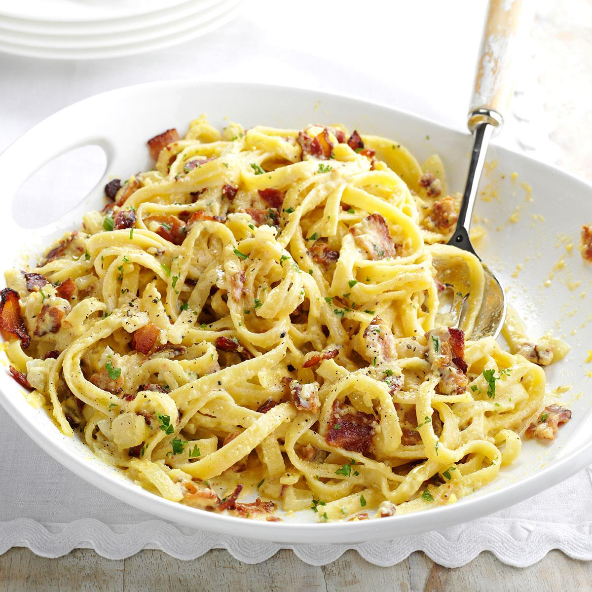

Carbonara Recipe

Pasta carbonara is an indulgent yet surprisingly simple recipe. Featuring
bacon (or pancetta) with plenty of Parmesan, this recipe takes only 30
minutes to prepare from start to finish!
Spaghetti alla carbonara. Luscious and wonderfully indulgent, pasta
carbonara takes as long to make as it does to cook the pasta.
The ingredients are simple—just spaghetti (or another long pasta), and
the carbonara is made with pancetta or bacon, eggs, Parmesan, a little
olive oil, salt and pepper.
Ingredients
- 1 tablespoon extra virgin olive oil or unsalted butter
- 1/2 pound pancetta or thick cut bacon, diced
- 1-2 garlic cloves, minced, about 1 teaspoon (optional)
- 3-4 whole eggs
- 1 cup grated Parmesan or pecorino cheese
- 1 pound spaghetti (or bucatini or fettuccine)
- Salt and black pepper to taste
Steps
- Heat pasta water
- Sauté pancetta/bacon and garlic
- Beat eggs and half of the cheese
- Cook pasta
- Toss pasta with pancetta/bacon
- Add the beaten egg mixture
Nutrition facts (per serving)
| 447 |
31g |
25g |
16g |
| Calories |
Fat |
Carbs |
Protein |